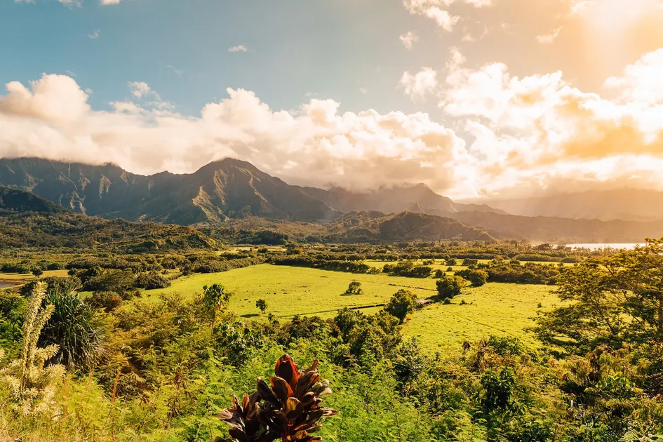
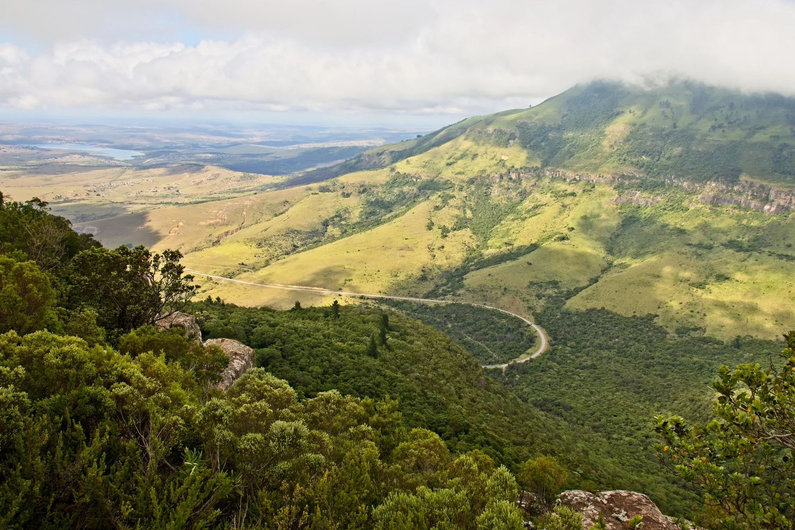

Salento es el pueblo más colorido del Quindío, famoso por sus balcones tradicionales y cercanía al Valle de Cocora. Visitamos Salento diariamente con planes desde $425.000 COP que incluyen transporte, coffee tours, caminatas por el valle de las palmas de cera, alojamiento en finca hoteles y guías locales expertos en cultura paisa.
Salento es un municipio del departamento del Quindío, Colombia, fundado en 1842. Es considerado uno de los pueblos más hermosos de Colombia, caracterizado por su arquitectura tradicional con balcones coloridos, su clima agradable (18-22°C), y su ubicación estratégica como puerta de entrada al Valle de Cocora. Fue declarado Pueblo Patrimonio de Colombia en 2010.
Descubre el pueblo patrimonio más bello del Eje Cafetero. Balcones coloridos, miradores, artesanías y gastronomía tradicional. Tours completos con Quindío Travel RNT 18152.
Salento es un pueblo patrimonio de Colombia fundado en 1842, ubicado en el Quindío. Conocido por balcones coloridos, arquitectura cafetera tradicional, y como puerta de entrada al Valle de Cocora. Altitud: 1.891 msnm. Población: 7.000 habitantes.
Salento está en el Quindío, Eje Cafetero colombiano. Coordenadas: 4.6333° N, 75.4833° W. A 24 km de Armenia (45 min), 200 km de Bogotá (4-5h), 280 km de Medellín (3-4h). En el valle del río Quindío, rodeado de montañas cafeteras.
Visita 1 día: $50.000-$80.000 COP. Fin de semana 2D/1N: $150.000-$300.000 COP. Plan completo 2D/1N: desde $425.000 COP (alojamiento, transporte, guías, entradas, alimentación). Plan VIP 3D/2N: desde $562.000 COP.
Principales actividades: Valle de Cocora (trekking 4-5h), Centro histórico (balcones coloridos), Mirador de Salento (vistas panorámicas), Coffee tours (fincas cafeteras), Artesanías locales, Gastronomía típica (trucha, café especial).
Reserva hoy y viaja esta semana - Cupos limitados para temporada alta



Fundado en 1842, Salento es considerado uno de los pueblos más hermosos de Colombia, famoso por sus balcones coloridos, arquitectura tradicional y acceso al Valle de Cocora.
Las casas de Salento son famosas por sus balcones con colores vibrantes que crean un paisaje único. Cada año, los vecinos renuevan los colores manteniendo la tradición viva.
Construida en estilo neogótico, esta iglesia del siglo XIX es el centro religioso y cultural del pueblo, con su arquitectura impresionante.
Sube al mirador para disfrutar de vistas panorámicas del Valle de Cocora y todo el Quindío. El punto perfecto para fotos memorables.
Descubre la cultura cafetera a través de talleres de artesanía en guadua, cerámica y tejidos tradicionales con artesanos locales.
Nuestros planes turísticos incluyen Salento como parte de la experiencia completa del Eje Cafetero.
Camina por el Valle de Cocora y explora Salento en un día completo. Transporte, guía y almuerzo incluidos.
Explora dos pueblos patrimonio en un día. Arquitectura tradicional, artesanías y gastronomía local.
Experiencia completa de la cultura cafetera con visita a fincas y tour por Salento con catación de café.
Estos planes incluyen visitas a Salento como parte del itinerario completo del Eje Cafetero.
Experiencia Completa
$613.000 / Intermedio (sin transporte)
Valle de Cocora · Salento · Filandia · Parques · Alojamiento
Experiencia Definitiva
$880.000 / Intermedio (sin transporte)
TODOS los atractivos · Valle de Cocora · Salento · Termales · Pueblos
Finca hoteles verificados cerca de Salento con acceso fácil al Valle de Cocora y el pueblo colonial.
Alojamiento intermedia VIP con piscina, jacuzzi y restaurante gourmet. Ideal para parejas y grupos.
Ver AlojamientosA 100 mts del Parque del Café con piscina, jacuzzi y juegos infantiles. Perfecto para familias.
Ver AlojamientosComplementa tu visita a Salento con estos destinos cercanos en el Quindío.
Pueblo con miradores panorámicos y artesanías tradicionales. A solo 20 minutos de Salento.
Visitar FilandiaEl valle de las palmas de cera. Senderismo impresionante y paisajes únicos del mundo.
Explorar Valle de CocoraEncuentra toda la información que necesitas para planificar tu visita a Salento.
Descubre los mejores alojamientos en Salento y sus alrededores, desde hostales hasta finca hoteles de lujo.
Ver AlojamientosExplora las mejores experiencias: Valle de Cocora, cafes, galerías de arte, caminatas y más.
Ver ExperienciasGuía completa de transporte desde Bogotá, Medellín y otras ciudades principales de Colombia.
Guía de TransporteDescubre la mejor época para visitar según tus preferencias de clima, eventos y actividades.
Mejor ÉpocaLista completa de equipamiento para disfrutar al máximo tu visita al Valle de Cocora y el pueblo.
Lista de EquipajeLos mejores spots para fotos, tips fotográficos y cómo capturar la belleza del Quindío.
Guía de FotografíaSalento está ubicado a 30 minutos de Armenia, capital del Quindío. Se puede llegar en Willys o transporte privado desde Armenia.
Todo el año es hermoso, pero los meses secos (enero-febrero y julio-agosto) son ideales para senderismo. El clima es agradable todo el año.
Ropa cómoda para caminar, calzado antideslizante, cámara, protector solar y chaqueta para las noches frescas en el Valle de Cocora.
Prueba el típico trucha asada, arepas quindianas, café del municipio y dulces tradicionales en los restaurantes locales.
Información esencial para moverser por Salento y sus alrededores de forma segura y conveniente.
Willys (Jeep): $15.000 COP por persona desde el terminal de Armenia (30 minutos). Salida cada 30 minutos desde las 6:00 AM hasta las 7:00 PM.
Taxi privado: $50.000-$70.000 COP (20-25 minutos). Disponible 24/7.
Bus: $12.000 COP desde la estación de buses de Armenia (45 minutos).
Willys colectivo: $8.000 COP por persona desde la plaza principal de Salento (15 minutos). Salidas cada 15-20 minutos.
Willys privado: $60.000 COP (ida y vuelta, espera 2 horas). Ideal para grupos.
Caminata: 45 minutos por carretera secundaria (sendero peatonal).
Puesto de Salud Salento: Ubicado en el centro del pueblo. Atención básica 24/7.
Hospital Armenia: A 30 minutos. Hospital Departamental Universitario del Quindío (emergencias).
Ambulancia: Línea 123 para emergencias médicas en todo Colombia.
Policía Turística: Estación en la plaza principal de Salento.
Cajeros: Bancolombia, Davivienda y BBVA en la plaza principal.
WiFi: Disponible en多数 restaurantes y cafeterías del centro.
Farmacias: 3 farmacias en el centro con horario extendido.
Supermercados: Tiendas de abastos en el centro para provisiones.
Parqueadero público: $5.000 COP por día (cerca de la plaza).
Parqueadero de hoteles: Generalmente incluido en la tarifa de alojamiento.
Estacionamiento calle: Disponible pero limitado en temporada alta.
Quindío Travel (Operador Local): +57-317-4426044 (WhatsApp 24/7)
Oficina de Turismo Salento: Ubicada en la plaza principal.
Turismo Quindío: +57-6-7313030 (Armenia)
Línea Nacional de Turismo: 01-8000-910-270
Entidades oficiales de turismo en el Quindío para información verificada y segura.
Entidad oficial encargada de promover y regular el turismo en el departamento. Ubicada en Armenia, Quindío.
Contacto: +57-6-7313030 | turismo@quindio.gov.co
Website: www.quindio.gov.co
Registro de establecimientos turísticos y verificación de RNT (Registro Nacional de Turismo).
Contacto: +57-6-7340300 | info@camaradecomercioquindio.com
Website: www.camaradecomercioquindio.com
Administración del Valle de Cocora y áreas protegidas. Requiere permisos para senderismo.
Contacto: +57-6-7212200 | parquesnacionales.gov.co
Website: www.parquesnacionales.gov.co
Entidad nacional que regula el turismo y emite el RNT (Registro Nacional de Turismo).
Contacto: 01-8000-910-270 | atencionalciudadano@mincit.gov.co
Website: www.mincit.gov.co
Cotiza tu tour a Salento con Quindío Travel y recibe una respuesta en menos de 2 horas.